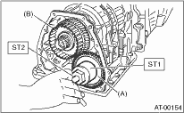

1. Remove the transmission assembly from vehicle body. 
2. Remove the rear wheel speed sensor, and separate the extension case from transmission case.
3. Set the range select lever to the “P” range.
4. Lift the crimped section, and then remove the lock nut.

|
(A) |
Reduction driven gear |
|
(B) |
Reduction drive gear |
5. Using the ST1 and ST2, extract the reduction driven gear assembly.
| ST1 499737000 | PULLER |
| ST2 899524100 | PULLER SET |

|
(A) |
Reduction driven gear ASSY |
|
(B) |
Reduction drive gear ASSY |
1. Remove the transmission assembly from vehicle body.
2. Remove the rear wheel speed sensor, and separate the extension case from transmission case.
3. Remove the rear drive shaft.
4. Set the range select lever to the “P” range.
5. Lift the crimped section, and then remove the lock nut.

6. Using the ST1 and ST2, extract the reduction driven gear.
| ST1 499737000 | PULLER |
| ST2 899524100 | PULLER SET |
7. Pull out the center differential assembly.